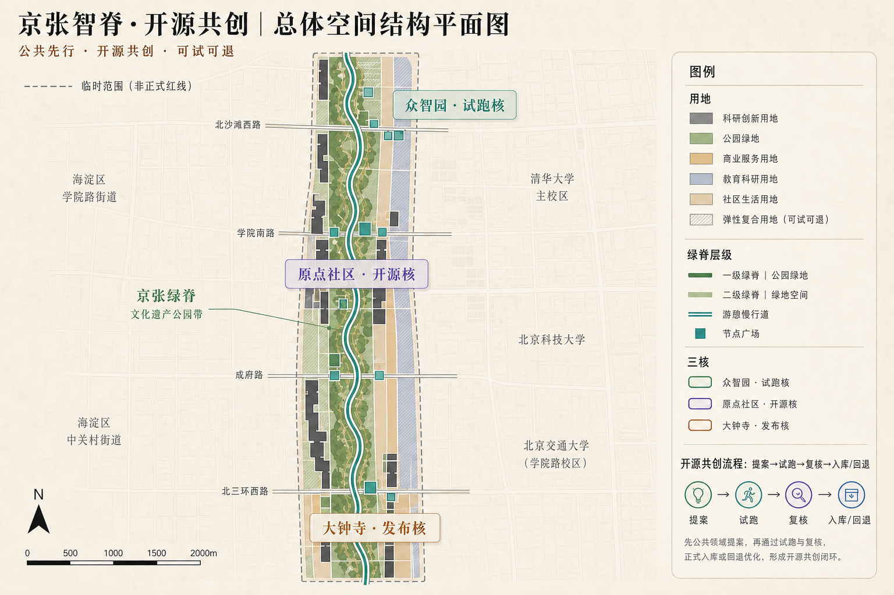
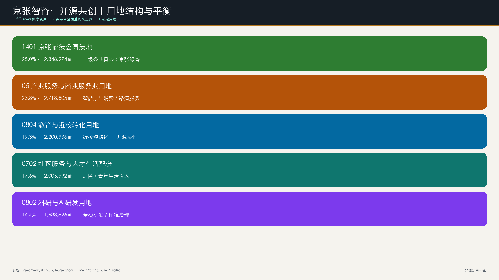
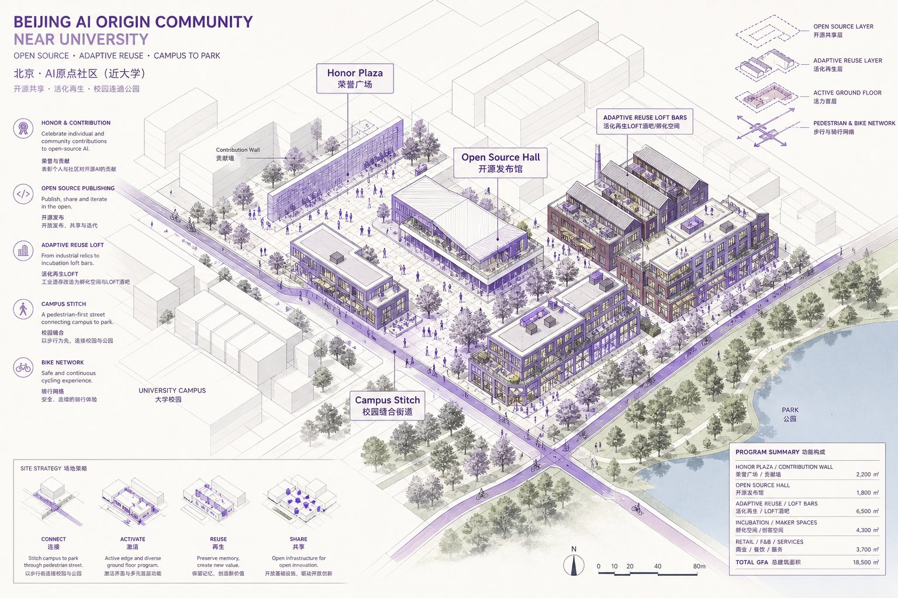
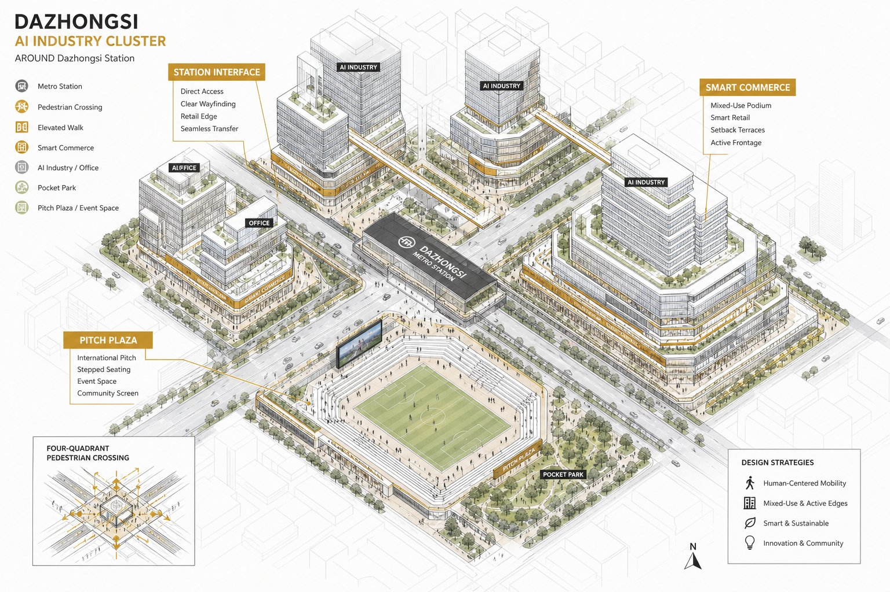
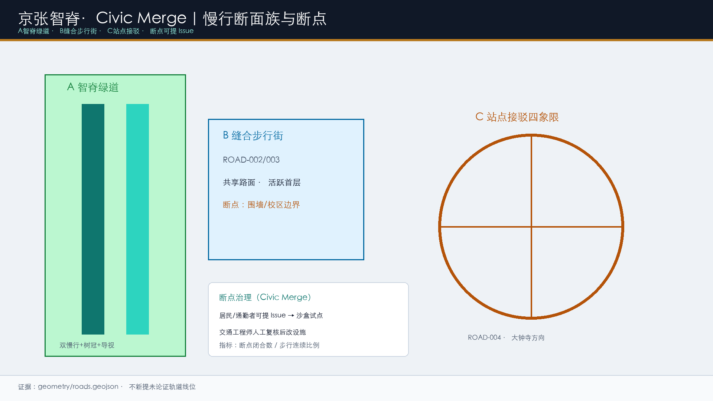
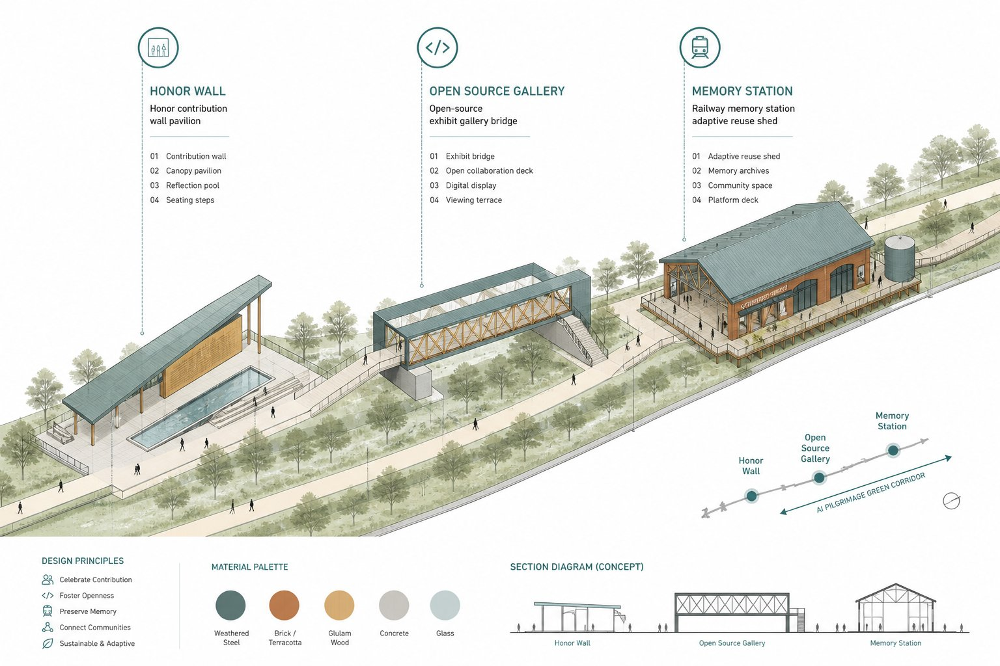

京张智脊·开源共创：公共先行，可试可退
以「开源共创」为独占机制：公共先行，开源共创，可试可退。v1.9 冲顶：一页判读、三大定位/五大功能/三区两翼硬映射、区域责任链、三核节点闸门与验收、12场景最低运营合同（SLA/非AI等价/退出）、公共利益审计、双语摘要、可核验试点KPI。provisional边界；全部为可供专业团队深化的概念建议。
京张智脊·开源共创：公共先行，可试可退
一页判读：把开源共创接回日常城市
这套方案不把京张带做成一排 AI 装置。它把公共领域骨架当作一条可审计主轴：众智园负责**试跑/验证**，AI 原点负责**提案/荣誉**，大钟寺负责**发布/入城**；中关村科技服务翼与小月河场景赋能翼把企业服务、社区需求与蓝绿系统接到三核。北纬社区、未来科学城、怀柔科学城、北京经开区与京津冀只作为任务书要求的**协同接口**，不代表已确认合作。[source:AGENT-TASKBOOK] [depth:overall_spatial_structure]
每次试点都走同一条 **开源共创** 公共回路：提案 → 资料边界 → 限时限域试跑 → 人工与公众复核 → 入库 / 回退。没有普通服务替代、人工责任、停止条件或清权证据，就不进入下一阶段。当前空间仍基于 provisional 约束，正式数据到位后须整体复算；本方案不主张供地、投资、审批或现场绩效已经成立。[source:AGENT-TASKBOOK] [data:geometry/site_boundary.geojson#SITE-001] [metric:site_area_sqm]
**English brief (for international review, non-statutory)**：JingZhang Spine · Open Co-Creation binds a public-realm-first spatial skeleton to an auditable loop—*propose → bound data → time-boxed pilot → human review → registry / rollback*. Three cores play Verify / Honor / Publish roles. All metrics using provisional geometry must be recalculated when official polygons arrive; FAR/height remain unknown. This is a conceptual package for professional deepening, not an approved plan.

任务书硬映射：三大定位 · 五大功能 · 三区两翼
| 任务书要素 | 本方案落点 | 可核验回读 | 证据 | | --- | --- | --- | --- | | 全球 AI 产业高地 / 朝圣地 | 智脊绿廊 + 三核角色分工 + 三处朝圣地标 | 能否指出 Verify/Honor/Publish 与三地标 | [source:AGENT-TASKBOOK]、[metric:pilgrimage_landmark_count] | | 五大功能（研发/转化/服务/生活/交往） | 0802 研发、0804 转化、05 服务、0702 生活、PUBLIC/路演交往 | 用地条带与公共空间是否全覆盖 | [data:geometry/land_use.geojson#LU-001]、[metric:land_use_0802_ratio] | | 三区 | 众智园 / 原点 / 大钟寺 | 三核节点计划与闸门是否齐全 | [data:geometry/key_areas.geojson#PROV-KEY-001] | | 两翼 | 中关村科技服务翼、小月河场景赋能翼 | 是否写成责任链而非地名清单 | [depth:overall_spatial_structure] | | 品牌 | 京张智脊·开源共创 / Open Co-Creation | 命名、副标、Logo 构造是否可复述 | agent.1 专节 |
区域协同不是名单，而是可回流的责任链
| 区域接口 | 输入 | 京张带输出 | 需确认的责任/证据 | | --- | --- | --- | --- | | 北纬社区与海淀高校院所 | 居民问题、人才、开源议题 | 公开场景题、参与反馈、可复现试跑记录 | 社区授权、参与补偿、隐私边界 | | 怀柔科学城 | 上游科学、设施能力 | 面向公众的解释性展示与验证问题 | 科研设施运营方同意、数据清权 | | 未来科学城 | 材料、能源、工程测试 | 低碳构件、排水、慢行接口小试 | 工程安全、生态和市政校核 | | 北京经开区 | 制造、产业化与规模部署 | 经过安全门的公共验证证据 | 企业/园区合作、采购与责任边界 | | 京津冀协同网络 | 多样城市场景与比较反馈 | 方案扩散、复用或退出记录 | 区域主管部门和运营方确认 |
每一条区域关系均为概念建议；不声称供地、投资、招商、数据共享或政府承诺。可实施单位是「一个问题、一个试跑窗口、一个责任人、一个公开复盘、一次扩散或退出」。[source:AGENT-TASKBOOK]
设计依据与资料清单
本 formal 方案以《百年京张AI创新带城市设计国际方案征集资格预审公告》为第一依据，并以 brief/site-package/ 任务、允许设计空间、来源清单、标准快照与 provisional 几何为机器可读依据。[source:OFFICIAL-ANNOUNCEMENT] 给出项目名、三层文字范围与面积口径；[source:AGENT-TASKBOOK] 给出 agent.1–agent.6 与禁用表述；[source:SITE-PACKAGE] 与 [source:SOURCE-REGISTRY] 约束资料可用级别；[source:PROCESSED-FACT-PACK] 仅作导航；[source:BOUNDARY-SOURCE] 与 [source:KEY-AREA-SOURCE] 标明 provisional 边界不得冒充官方红线。公开索引内阅读入口见 [source:PUBLIC-BRIEF]。
标准响应覆盖 [standard:PROJECT-OFFICIAL-ANNOUNCEMENT]、[standard:PROJECT-AGENT-OPEN-CALL-TASKBOOK]、[standard:MOHURD-URBAN-DESIGN-MEASURES]、[standard:MOHURD-CONTROL-DETAILED-PLANNING]、[standard:MNR-LAND-USE-CLASSIFICATION-GUIDE] 与待补 [standard:MOHURD-ARCH-DESIGN-DEPTH-2016]。现状诊断由 [depth:existing_conditions_diagnosis] 约束：在公开包缺控规/权属/市政精细数据时，以“文字范围+provisional几何+公开任务”为可讨论基线，强度与拆改留列为待确认。
**独占机制（与同名“智脊”方案的差异点）**：本方案不只提出线性廊道结构，而是把公共领域骨架绑定一套可审计的 **开源共创**——口号是「**公共先行，开源共创，可试可退**」。任何 AI 场景或公共界面改造，都必须走「提案 → 资料边界 → 限时限域试跑 → 人工与公众复核 → 入库 / 必要时回退」；入库对象是可验证的公共改进，不是企业广告或个人排行榜。国际实践（King's Cross 公共先行、Kendall 近校短路径、one-north 组团分化）仅作 [source:CASE-KINGS-CROSS]、[source:CASE-KENDALL]、[source:CASE-ONE-NORTH]、[source:CASE-STATION-F] 的 **background_only 方法参照**，不作红线或控规依据。
空间证据以 [data:geometry/site_boundary.geojson#SITE-001]、[data:geometry/key_areas.geojson#PROV-KEY-001] 与 [metric:site_area_sqm]、[metric:key_area_count] 为准。提交边界复算面积 [metric:site_area_sqm]=11412825.386 平方米；正式 polygon 到位后整体重算。
三层范围工作框架
三层递进由 [depth:three_level_scope_framework]、[depth:overall_spatial_structure] 与 [standard:PROJECT-OFFICIAL-ANNOUNCEMENT] 约束：统筹 43.6 km² 回答生态与城市形态；总体 11.4 km² 落到公共骨架、用地平衡、交通市政与风貌建议；重点 368.4 ha 对三核做街区级详图验证。[data:geometry/site_boundary.geojson#SITE-001] 与 [data:geometry/key_areas.geojson#PROV-KEY-001] 提供范围索引。
总体概念为 **京张智脊·开源共创**（JingZhang Spine · Open Co-Creation）：论证顺序为 **原则宪章 → 公共领域骨架 → 用地/街块回应 → 三核详图 → 开源共创试点 KPI**。空间动作在提交边界内组织廊道与节点，不新画法定红线。

| 层级 | 设计问题 | 本方案回答 | 数据落点 | | --- | --- | --- | --- | | 统筹 | 如何形成可检验的世界级创新带 | 10条原则宪章 + 开源共创 + 三区两翼 | compliance / standard | | 总体 | 如何先公共后地块 | 一级绿脊/二级核庭/三级口袋+断面族 | [data:geometry/land_use.geojson#LU-001]、[data:geometry/roads.geojson#ROAD-001] | | 重点 | 三核如何可审查 | 分片结构/界面/场景/风险详图 | [data:geometry/key_areas.geojson#PROV-KEY-001]、[data:geometry/key_areas.geojson#PROV-KEY-002]、[data:geometry/key_areas.geojson#PROV-KEY-003] |
统筹研究范围产业与未来城市研究
本节响应 [source:AGENT-TASKBOOK] 与 [standard:PROJECT-AGENT-OPEN-CALL-TASKBOOK]，并写入可检验的设计原则宪章。
京张智脊设计原则宪章（10条，概念建议）
1. **公共领域先行**：街道与广场骨架先于地块填充。 2. **文脉可步行**：京张铁路记忆必须进入日常慢行，而非仅作装饰。 3. **近校短路径**：原点社区以分钟级步行连接高校与转化空间（Kendall 逻辑，方法参照）。 4. **组团分化、骨架共享**：三核功能不同，但共享智脊慢行与蓝绿系统（one-north 逻辑，方法参照）。 5. **混合但不失序**：混合规则写清主用途与可兼容层，不作法定管制伪装。 6. **开源共创可审计**：AI场景必须可提案、可试跑、可人工复核、可关闭、可回退。 7. **低扰动更新**：保留优先，重资产等待权属与控规。 8. **开放界面**：拒绝封闭园区感，首层与广场对公众友好；惠及居民、青年、学生、游客与弱势群体可达。 9. **长期运营可见**：活动与荣誉墙进入年度节奏，而非一次性表演。 10. **概念边界诚实**：凡缺官方条件，一律待确认；不伪造批准。
**命名与识别（agent.1）**：主名称 **京张智脊·开源共创** / JingZhang Spine · Open Co-Creation；副标「公共先行，开源共创，可试可退」。副名称智脊绿廊、开源原点、众智加速核、大钟寺智能原生港、开源荣誉墙。Logo 概念：铁轨剖面→开源分叉→共创闭环；主色深青/轨道灰/琥珀金。字体商标另行清权。与仅强调“脊/廊”的方案相比，本方案以 **开源共创** 作为可记忆差异。
**全球案例→海淀转化机制（agent.2）**（避免罗列；案例均 background_only）：
| 国际参照 | 可迁移机制 | 海淀空间落点 | 来源登记 | | --- | --- | --- | --- | | King's Cross | 公共领域先行、遗产活化、长期运营 | 智脊绿脊+记忆站+Open Week | [source:CASE-KINGS-CROSS] | | Kendall Square | 锚点机构+短路径转化 | 原点社区近校缝合 | [source:CASE-KENDALL] | | one-north | 组团分化共享骨架 | 三核+两翼 | [source:CASE-ONE-NORTH] | | Station F | 铁路遗产巨型孵化界面 | 开源发布厅/成果廊 | [source:CASE-STATION-F] | | 22@Barcelona | 街道改造+知识产业工具包 | 慢行断点缝合项目库 | [source:CASE-22AT] | | 上海硅巷等公开观察 | 先生活生态再生产升级 | 三级口袋与社区服务条带 | [source:CASE-SILICON-ALLEY-OBS] |
转化分工概念建议：众智园=全栈与标准治理；原点=开源与近校转化；大钟寺=智能原生消费与国际交往；中关村科技服务翼=法务/IP/投融资；小月河场景赋能翼=生活与公共服务试验。不编造企业名单、产值或财政承诺。结构证据回接 [data:geometry/land_use.geojson#LU-001]、[data:geometry/public_space.geojson#PUBLIC-001]、[depth:overall_spatial_structure] 与 [standard:MOHURD-URBAN-DESIGN-MEASURES]。
开源共创（概念运营语法）
| 步骤 | 含义 | 空间载体 | 退出条件 | | --- | --- | --- | --- | | 提案 | 公开提出城市问题与受益对象 | 驿站/线上看板 | 问题不成立则关闭 | | 资料边界 | 声明可用公开/授权资料与缺口 | 证据台 | 缺授权则不进入试跑 | | 试跑 | 限时限域试点 | 核庭/绿脊试点段 | 安全或扰民事件即暂停 | | 复核 | 专业、运营、居民/公众代表复核 | 议事与展示界面 | 不通过则不入库 | | 入库 / 回退 | 转为常态运营或回退 | 荣誉墙/变更记录 | 任何主体可申诉触发复审 |
总体设计范围城市更新与控规深度城市设计
总体设计采用“**智脊优先、公共先行、开源共创可试、低扰动更新**”的参考框架。[standard:MOHURD-CONTROL-DETAILED-PLANNING] 要求区分已知控制、设计建议与待确认：容积率等保持 [metric:floor_area_ratio]=unknown。[depth:land_use_layout] 与 [depth:development_intensity_controls] 通过全覆盖用地分区与待确认清单满足。
**公共领域占比讨论**：概念复算 [metric:public_realm_ratio]=0.342327（绿地+公共空间），其中 [metric:green_ratio]=0.253228、[metric:public_space_ratio]=0.089098。King's Cross 公开叙述中公共领域约占场地约四成，仅作**目标参照**而非已达承诺；深化应提升连续性与品质。[data:geometry/green_space.geojson#GREEN-001]、[data:geometry/public_space.geojson#PUBLIC-001]。
用地与建筑证据：[data:geometry/land_use.geojson#LU-001]、[data:geometry/buildings.geojson#BLDG-001]、[metric:building_footprint_area_sqm]=692404.76；道路 [data:geometry/roads.geojson#ROAD-001]。更新优先识别：慢行断点、清河界面、近校转化街、大钟寺四象限、开源荣誉节点。政策建议：公共空间与场景可先试，重资产等待权属/控规/市政。

上图为概念轴测（isometric），表达“绿脊骨架先行、建筑体积回应公共界面”的三维关系；不替代 GeoJSON，也不构成审批总平面。
重点区域详细设计
三核详图由 [depth:three_key_area_detailed_design] 约束，索引 [data:geometry/key_areas.geojson#PROV-KEY-001]、[data:geometry/key_areas.geojson#PROV-KEY-002]、[data:geometry/key_areas.geojson#PROV-KEY-003]。下列均为概念建议，不构成地块级拆改留或工程可行性结论。

众智园AI自主创新加速区（PROV-KEY-001，约192.1 ha）
- **定位**：花园型全栈自主创新加速核 / 开源共创**验证端**。
- **空间结构**：清河界面绿廊（GREEN-002）+ 东西创新连廊（ROAD-002）+ 治理庭院（PUBLIC-003）。
- **节点体验序列**：到达 → 公共状态板 → 缝合阈 → 治理庭院 → 预约沙盒 → 回到绿脊/公园。
- **公共界面**：园区对绿脊与清河开放；居民**无需账号**可读状态、可穿越、可离开；展示庭院可预约沙盒。
- **更新方法**：保留有价值研发界面；低效围墙段改造为可步行界面；BLDG-001 为讨论性示范基底。
- **场景**：安全治理沙盒、自主模型评测开放日（产业验证）。
- **专业闸门（未满足则不开窗）**：清河/蓝线/防洪、对外交通、权属、消防、数据清权。
- **验收口令**：无账号可读状态；急停不占无障碍链；窗口结束归还普通公园使用。
- **风险待确认**：河道蓝线、防洪、园区权属、对外道路条件。

北京AI原点社区（PROV-KEY-002，约104.3 ha）
- **定位**：近校型开源协作与成果转化社区 / 开源共创**提案与荣誉端**。
- **空间结构**：校企慢行缝合（ROAD-003）+ 荣誉广场（PUBLIC-001）+ 转化楼宇（BLDG-002）+ 社区配套（BLDG-004/0702）。
- **节点体验序列**：校园边界 → 开源发布厅 → 清权桌 → 贡献墙 → 学习共享 → 安静居住边。
- **公共界面**：首层发布/展示对街道开放；荣誉墙可步行浏览、可署名亦可撤回；纸面与人工服务常在。
- **更新方法**：保留近校生活肌理；低效厂房改造为转化与开源空间；新建仅作位点讨论。
- **场景**：开源发布厅、校企转化客厅、人才生活管家。
- **专业闸门**：校园/地块边界、文保（若适用）、搬迁影响评估、居住安宁、站点一体化条件。
- **验收口令**：贡献记录可追溯且可撤回；老年居民无数字服务也能走完日常路线；试跑不挤占生活主链。
- **风险待确认**：校园边界、首层业态、居住配套、站点一体化。

大钟寺AI产业聚集区（PROV-KEY-003，约72.0 ha）
- **定位**：城市型智能原生经济与国际交往港 / 开源共创**发布与入城端**。
- **空间结构**：四象限步行环（ROAD-004）+ 路演广场（PUBLIC-002）+ 复合公园（GREEN-003）+ 商业办公复合体（BLDG-003）。
- **节点体验序列**：轨道到达 → 四象限过街 → 安静座椅 → 短路演 → 国际访客路线 → 日常商业。
- **公共界面**：站城一体的连续步行与活跃首层；活动可降容为零，日常商业与过街仍开放。
- **更新方法**：优先缝合交叉口步行；商业界面更新；重资产待权属。
- **场景**：国际路演、数据要素会客厅、智能终端展示。
- **专业闸门**：轨道接口、交叉口组织、消防/客流、管线、夜间噪声管理。
- **验收口令**：活动结束后 30 分钟恢复日常；取消活动后过街与安静座位仍可用。
- **风险待确认**：轨道接口、交叉口组织、管线、夜间经济管理。

三核节点计划一览（概念，非施工图）
| 节点 | 开源共创角色 | 组件/AI 边界 | 专业闸门与验收 | 证据 | | --- | --- | --- | --- | --- | | 众智园可信验证花园 | 试跑 / 验证 | 有界沙盒；急停可见；状态板公开 | 清河/防洪/权属/消防确认；无账号可读可走 | [data:geometry/key_areas.geojson#PROV-KEY-001] | | 原点开源转化街区 | 提案 / 荣誉 | 清权桌；贡献可撤回；人工窗口常在 | 校园/文保/居住安宁确认；记录可追溯 | [data:geometry/key_areas.geojson#PROV-KEY-002] | | 大钟寺城市会客厅 | 发布 / 入城 | 活动可降容；设备停靠隔离；人工广播 | 轨道/消防/客流确认；结束后回日常 | [data:geometry/key_areas.geojson#PROV-KEY-003] |
节点级载体与验收清单见 visual/assets/key-area-node-plans.json（概念草案，非正式审批文件）。
| 片区 | 结构动作 | 开源共创角色 | 证据 | | --- | --- | --- | --- | | 众智园 | 清河+庭院+东西廊 | 试跑 / 验证 | [data:geometry/key_areas.geojson#PROV-KEY-001] | | 原点 | 缝合+荣誉广场+转化街 | 提案 / 开源荣誉 | [data:geometry/key_areas.geojson#PROV-KEY-002] | | 大钟寺 | 四象限+路演+复合公园 | 发布 / 入城 | [data:geometry/key_areas.geojson#PROV-KEY-003]、[metric:key_area_count] |
AI 创新生态、人才画像与 AI+ 场景
响应 agent.2/agent.3：[source:AGENT-TASKBOOK] 要求≥10场景卡、≥3测试验证、≥5画像。场景绑定 [data:geometry/public_space.geojson#PUBLIC-001]、[data:geometry/roads.geojson#ROAD-001]、[data:geometry/green_space.geojson#GREEN-001] 与 [metric:public_space_ratio]、[metric:green_ratio]、[metric:scenario_card_count]、[metric:industrial_validation_scenario_count]。
**共同治理底线**：不采集人脸等生物识别用于身份追踪；不建立跨场景个人画像；公共安全与服务判断必须保留人工复核；测试须明示告知并提供退出；不以非公开数据为必要条件。场景先经 开源共创试跑，再决定是否扩大。
| 用户画像 | 需求 | 空间响应 | 自检边界 | | --- | --- | --- | --- | | 开源开发者 | 发布/协作/声誉 | 发布厅、贡献墙 | 不采个人轨迹；贡献可撤回 | | 初创团队 | 试验场/算力入口 | 众智园共享测试 | 服务需授权 | | 企业访客 | 展示/接待 | 路演客厅 | 商标清权 | | 周边居民 | 通勤/休闲/议事 | 智脊与口袋空间 | 不做商业画像；可参与复核 | | 高校师生 | 转化/慢行 | 近校缝合与0804条带 | 成果需授权 | | 国际游客/青年访客 | 可读叙事与参与 | 朝圣地标+双语导视 | 不做强制签到 |
十二张场景卡（完整字段）
统一字段：**空间位置—服务对象—运行数据—隐私边界—人工复核—拟议运营主体—共创步骤—风险**。02/07/11 为不少于3个产业测试验证场景；全部不写成已批准运营。
| 卡号 | 场景 | 位置 | 服务对象 | 数据与隐私边界 | 人工复核 | 拟议运营主体类型 | 共创步骤 | | --- | --- | --- | --- | --- | --- | --- | --- | | 01 | 开源发布厅 | 原点 PUBLIC-001 | 开发者/师生 | 自愿授权上墙；可撤回 | 内容审核组 | 高校/社区开源运营团队 | 提案→入库 | | 02★ | 安全治理沙盒 | 众智园 PUBLIC-003 | 研发团队/监管观察员 | 离线或授权数据；禁生物识别 | 安全官+专家复核 | 园区运营+专业评估团队 | 试跑 | | 03 | 慢行断点诊断 | ROAD-001 | 居民/通勤者 | 聚合流量；禁个人轨迹 | 交通工程师后改设施 | 街道/交通协同主体 | 提案→试跑 | | 04 | 人才生活管家 | 0702 配套 | 青年人才/居民 | 可关闭个性化；最小化 | 社区管理员 | 社区服务运营主体 | 试跑→复核 | | 05 | 校企转化客厅 | BLDG-002 | 师生/初创/企业 | 会谈数据不出域 | 双方指定复核人 | 高校转化办公室+企业服务 | 资料边界→Review | | 06 | 国际路演客厅 | PUBLIC-002 | 企业访客/游客 | 媒体素材需授权 | 活动安全官 | 产业聚集区运营主体 | 试跑→入库 | | 07★ | 数据要素会客厅 | 大钟寺 | 企业/研究机构 | 授权可审计可撤回 | 合规官 | 数据服务协同团队 | 资料边界→试跑 | | 08 | 低碳算力驿站 | 公服节点 | 开发者/设施运维 | 能耗与预约日志 | 运维巡检+人工关停 | 市政/园区设施主体 | 试跑 | | 09 | 京张记忆线路 | GREEN-001+BLDG-005 | 居民/游客/学生 | 公开史料；无追踪签到 | 文保与解说审定 | 公共文化运营主体 | 提案→入库 | | 10 | 全球AI Open Week | 公共系统 | 公众/青年/企业 | 活动报名最小化 | 安全与隐私官 | 多方活动联合主体 | 年度入库 | | 11★ | 医疗问诊辅助 | 社区点 | 居民（弱势群体优先可达） | 医疗数据不出域 | **医师终审** | 社区卫生协同主体 | 试跑（严格） | | 12 | 教育伴学 | 0804 | 学生/教师 | 禁跨校画像 | **教师在环** | 教育服务协同主体 | 试跑 |
★=产业测试验证场景。[metric:scenario_card_count]=12，[metric:industrial_validation_scenario_count]=3。
十二场景的最低运营合同（设计草案，非法定 SLA）
统一要求：最小数据、人工责任、非 AI 等价路径、退出/回退条件；窗口结束归还普通公共使用。完整字段见 visual/assets/scenario-operation-matrix.json。[metric:open_cocreation_contract_count]
| 场景组 | 空间载体 | 触发/最小数据 | 责任与响应时钟 | 非 AI 等价 / 退出 | | --- | --- | --- | --- | --- | | 01 开源发布厅 | PUBLIC-001 | 授权材料、公开流程 | 内容审核；材料 2 工作日更正 | 人工柜台/公告栏；授权撤回即熔断 | | 02★ 安全治理沙盒 | PUBLIC-003 | 清权样本、评测日志、急停 | 安全官+专家；窗口结束发摘要 | 纸面评测/专家会；来源不明拒绝 | | 03 慢行断点诊断 | ROAD-001 | 人工计数、障碍记录 | 交通负责人；投诉 7–14 日 | 人工引导+实体导视；主链断裂即停 | | 04 人才生活管家 | 0702 | 可关闭个性化；最小化 | 社区管理员；人工窗口全时 | 人工柜台；数字层不得成前提 | | 05 校企转化客厅 | BLDG-002 | 会谈数据不出域 | 双方指定复核人；7 日记录 | 线下会谈纪要；缺授权不开会 | | 06 国际路演客厅 | PUBLIC-002 | 媒体授权、消防预案 | 活动安全官；结束后 30 分钟恢复 | 普通商业/公园；噪声超阈降容 | | 07★ 数据要素会客厅 | 大钟寺节点 | 授权可审计可撤回 | 合规官；越权访问熔断 | 人工咨询台；无清权不开窗 | | 08 低碳算力驿站 | 公服节点 | 能耗与预约日志 | 运维巡检；可人工关停 | 关闭驿站不影响通行 | | 09 京张记忆线路 | GREEN-001+BLDG-005 | 公开史料；无追踪签到 | 文保/解说审定；损坏 48h 替换 | 纸本导览/人工讲解 | | 10 AI Open Week | 公共系统 | 报名最小化、安静区 | 安全与隐私官；14 日复盘 | 取消活动后日常开放 | | 11★ 医疗问诊辅助 | 社区点 | 医疗数据不出域 | **医师终审**全时 | 人工分诊；误诊风险即下架 | | 12 教育伴学 | 0804 | 禁跨校画像 | **教师在环** | 纸面辅导；缺教师不开 |
公共利益、参与和公平：先测再承诺
| 审计项 | 当前状态 | 试点前证据 | 冲突处置 | | --- | --- | --- | --- | | 无障碍连续与夜间可达 | 未知，不填造假基线 | 日/夜配对步行审计、照度记录 | 暂停场景，给人工路线并公开修复 | | 无 App 获得服务 | 未知，列入服务盘点 | 纸面、人工、语音、多语种路径测试 | 保留人工窗口，数字层不得成为前提 | | 分组影响差异 | 未知，分组调查 | 老人、残障、照护、夜班、儿童、访客、小商户、维护人员参与 | 公开分歧，不以平均数掩盖差异 | | 投诉与回应 | 未知，建立公共状态板 | 每案确认/修复时钟与责任人 | 7–14 日回应；无法修复则撤回 | | 隐私与清权 | 仅最小数据、无个体轨迹 | 来源、授权、留存逐项核验 | 授权撤回/越权访问即熔断 | | 生活主链不被挤占 | 概念承诺 | 试点前后居民/商户主链对照 | 主链受损即回退场景 |
参与原则：公开问题 → 给时间与渠道 → 返回决定及理由 → 记录异议 → 补救或退出。审计方法见 visual/assets/public-interest-audit.json；它不把「待测」写成「已达标」。[depth:risk_missing_data]
用地、建筑规模与拆改留方案
用地依据 [standard:MNR-LAND-USE-CLASSIFICATION-GUIDE]，深度 [depth:height_massing_character]、[depth:retain_renovate_demolish]。证据 [data:geometry/land_use.geojson#LU-001]、[data:geometry/buildings.geojson#BLDG-001]、[metric:building_footprint_area_sqm]。
用地平衡表（EPSG:4548 复算，概念分区）
| 代码 | 名称 | 面积㎡ | 占比 | 设计意图 | 证据 | | --- | --- | --- | --- | --- | --- | | 0802 | 科研与AI研发用地 | 1638826 | 14.4% | 全栈研发与标准治理空间条带 | [data:geometry/land_use.geojson#LU-001] | | 1401 | 京张蓝绿公园绿地 | 2848274 | 25.0% | 公共领域一级骨架：京张绿脊 | [data:geometry/land_use.geojson#LU-002] | | 05 | 产业服务与商业服务业用地 | 2718805 | 23.8% | 智能原生消费与企业服务 | [data:geometry/land_use.geojson#LU-003] | | 0804 | 教育与近校转化用地 | 2200936 | 19.3% | 近校转化与开源协作 | [data:geometry/land_use.geojson#LU-004] | | 0702 | 社区服务与人才生活配套用地 | 2005992 | 17.6% | 人才生活与社区服务嵌入 | [data:geometry/land_use.geojson#LU-005] |
占比指标：[metric:land_use_0802_ratio]、[metric:land_use_1401_ratio]、[metric:land_use_05_ratio]、[metric:land_use_0804_ratio]、[metric:land_use_0702_ratio]。五类条带共享边界、无缝覆盖提交范围。
**混合规则（概念建议，非法定）**：0802允许底层展示服务；1401兼容慢行与低冲击活动；05允许办公零售路演混合首层；0804允许转化展厅；0702嵌入社区与人才配套、禁止侵扰性业态。
**拆改留方法**：1）保留文脉廊道与成熟绿地；2）低效围墙/断裂界面作改造候选（需权属评估）；3）新建仅为讨论位点；4）任何地块结论待确认。高度/FAR/退线：[metric:floor_area_ratio]=unknown。
交通、轨道、市政与公共服务设施
深度 [depth:traffic_rail_slow_parking]、[depth:municipal_new_infrastructure]。证据 [data:geometry/roads.geojson#ROAD-001]、[data:geometry/public_space.geojson#PUBLIC-001]、[data:geometry/constraints.geojson#CONSTRAINTS]（约束层为空，表示正式红线/管线未入包）。

街道断面族（概念建议）
| 类型 | 对应道路 | 断面要点 | 断点类型 | | --- | --- | --- | --- | | A 智脊绿道 | ROAD-001 | 双慢行+树冠+可解释导视 | 环路跨线/公园端头 | | B 缝合步行街 | ROAD-002/003 | 共享路面+活跃首层 | 围墙接口/校区边界 | | C 站点接驳 | ROAD-004 | 四象限步行优先 | 交叉口通达 |

轨道聚焦大钟寺站一体化讨论，不新提未论证线位。停车与非机动车在公共空间边缘分级设置，细节待专项。市政与端侧算力驿站为原型建议；管线消防排水列为前置条件。
蓝绿空间、公共空间与城市风貌
深度 [depth:blue_green_public_space]，标准 [standard:MOHURD-URBAN-DESIGN-MEASURES]。证据 [data:geometry/green_space.geojson#GREEN-001]、[data:geometry/public_space.geojson#PUBLIC-001]、[metric:green_ratio]、[metric:public_space_ratio]、[metric:public_realm_ratio]、[metric:pilgrimage_landmark_count]。
**公共领域三级**：一级绿脊 GREEN-001；二级核庭 PUBLIC-001/002/003；三级口袋 PUBLIC-004/005。
**朝圣地标（agent.4，≥3）**：1）智能体贡献荣誉墙（PUBLIC-001，开源公示）；2）开源成果展示廊（沿 ROAD-001/GREEN-001）；3）京张铁路记忆站（BLDG-005）。形式与位置以最终审批为准；不作强制实名排行榜。

**文化叙事（agent.5）**：自主工程精神→中关村开源→开源共创可信公共文化。导视可用里程记号+合并箭头隐喻，但文化标识与一带Logo分层。风貌原则：低干扰界面、连续树冠、夜间安全照明分级；无文保精细图时不给伪精确控制线。
更新项目清单、实施政策与分期计划
深度 [depth:renewal_project_list]、[depth:phasing_implementation]。分期 [data:geometry/phasing.geojson#PHASE-001]。本节同时回答顾问自检对「阶段—参与主体—可衡量指标」的要求。
分期（概念建议）
| 阶段 | 时间建议 | 空间重点 | 参与主体类型 | 可衡量指标（监测/评估） | 证据 | | --- | --- | --- | --- | --- | --- | | 近期试点 | 0–24 个月 | PHASE-001 公共领域与场景沙盒 | 社区、高校、园区运营团队、街道协同 | 断点闭合数、沙盒场次、人工复核通过率、居民反馈 | [data:geometry/phasing.geojson#PHASE-001] | | 中期成型 | 第2–5年 | 众智园+原点更新单元 | 企业服务主体、高校转化办、公共空间运维 | 开放界面长度、转化活动数量、荣誉墙更新频次 | PHASE-002 | | 远期完善 | 第5年以降 | 大钟寺四象限+两翼网络 | 多方联合运营、文化与国际交流主体 | 步行连续里程、活动参与满意度、回滚事件闭环率 | PHASE-003 |
更新项目清单（含主体与 KPI）
| 编号 | 项目 | 建议参与主体类型 | 依赖 | 阶段 | 可衡量指标 | 人工复核点 | 证据 | | --- | --- | --- | --- | --- | --- | --- | --- | | JZ-01 | 智脊慢行断点缝合 | 交通/街道协同主体；居民可提提案 | 红线桥下空间 | 近期试点 | 断点闭合数量、步行连续比例 | 交通安全审查 | [data:geometry/roads.geojson#ROAD-001] | | JZ-02 | 清河创新界面 | 园区+生态协同；社区观察 | 蓝线防洪 | 近期–中期 | 开放界面长度 | 防洪与生态 | [data:geometry/green_space.geojson#GREEN-001] | | JZ-03 | 近校转化街 | 高校主体+初创企业+社区 | 校区权属 | 中期 | 转化活动场次、师生参与数 | 校园管理 | [data:geometry/buildings.geojson#BLDG-001] | | JZ-04 | 大钟寺四象限步行 | 轨道+街道协同；游客友好 | 站点交叉口管线 | 中期–远期 | 四向步行可达时长 | 交通组织 | [data:geometry/public_space.geojson#PUBLIC-001] | | JZ-05 | 朝圣地标与荣誉墙 | 公共文化运营；开发者社区 | 空间许可版权 | 全程 | 展示更新频次、撤回请求响应时长 | 内容与版权审核 | [data:geometry/public_space.geojson#PUBLIC-001] | | JZ-06 | AI Open Week | 高校/企业/社区联合主体 | 活动安全许可 | 年度 | 参与者数量、转化线索、满意度评估 | 安全与隐私 | [data:geometry/phasing.geojson#PHASE-001] | | JZ-07 | 开源共创证据台 | 维护者/数据治理团队 | 数据协议 | 近期起 | 公开 变更记录 条数、回滚闭环率 | 合规官 | [data:geometry/constraints.geojson#CONSTRAINTS] |
[metric:renewal_project_count]=7。
试点退出门与入库门槛（可核验，概念）
| 门 | 通过条件（须同时满足） | 失败处置 | | --- | --- | --- | | G0 资料边界 | 公开/授权资料清单完整；provisional 缺口明示 | 不得进入试跑 | | G1 安全与隐私 | 无生物识别追踪；人工接管演练记录存在；敏感场景终审人在岗 | 立即暂停 | | G2 公共可用性 | 无障碍与无 App 路径可用；生活主链未受损 | 回退数字层，保留人工服务 | | G3 复盘公开 | 变更记录上墙；投诉 7–14 日闭环或说明不可修复 | 不得入库 | | G4 入库 | G0–G3 通过且公众异议已记录；可随时申诉触发复审 | 维持试跑或关闭 |
**实施政策建议（概念）**：场景开放揭榜与 开源共创准入；公共空间低影响试点许可研究；开发者社区与属地街道共建；数据最小化与人工复核作为合同条款模板。均不构成政府部门已决政策。
**运营节奏（agent.6）**：四季运营建议为春问题征集、夏场景开放、秋开发者周、冬证据复盘；每年 1 次 JingZhang AI Open Week；每季 1 次人工复核日；荣誉墙按季度更新。转化漏斗=参观→注册开发者→路演→服务对接。不写成已定政府安排或预算。
**长期运营可迁移机制（方法比较，非照搬）**：站点公共客厅、有界城市实验室、蓝绿服务街、开发者公共库、夜间安静网络、文化作为方法。每种机制只迁移「可借鉴接口」，正式引用前需本地清权与责任链证据。[source:CASE-KINGS-CROSS] [source:CASE-KENDALL]
指标体系、面积复算与合规矩阵
深度 [depth:metrics_recalculation]。引用 [metric:site_area_sqm]、[metric:key_area_count]、[metric:building_footprint_area_sqm]、[metric:green_ratio]、[metric:public_space_ratio]、[metric:public_realm_ratio]、[metric:land_use_0802_ratio]、[metric:land_use_1401_ratio]、[metric:land_use_05_ratio]、[metric:land_use_0804_ratio]、[metric:land_use_0702_ratio]、[metric:scenario_card_count]、[metric:industrial_validation_scenario_count]、[metric:pilgrimage_landmark_count]、[metric:renewal_project_count]、[metric:open_cocreation_contract_count]、[metric:open_cocreation_gate_count]；回指 [data:geometry/site_boundary.geojson#SITE-001]、[data:geometry/key_areas.geojson#PROV-KEY-001]、[data:geometry/buildings.geojson#BLDG-001]、[data:geometry/green_space.geojson#GREEN-001]、[data:geometry/public_space.geojson#PUBLIC-001]、[data:geometry/land_use.geojson#LU-001]。

摘要：site=11412825.386；building=692404.76；green=0.253228；public=0.089098；realm=0.342327；key_area_count=3；scenario_card_count=12；industrial_validation_scenario_count=3；pilgrimage_landmark_count=3；renewal_project_count=7；open_cocreation_contract_count=12；open_cocreation_gate_count=5；FAR=unknown。compliance 覆盖公告1.3–1.5与agent.1–6。v1.9 以节点闸门、运营合同与公共利益审计提高可实施性与表达完整度。
风险、版权与合规说明
深度 [depth:risk_missing_data]，校核 [data:geometry/constraints.geojson#CONSTRAINTS]、[source:SITE-PACKAGE]、[source:SOURCE-REGISTRY]、[source:PROCESSED-FACT-PACK]、[source:PUBLIC-BRIEF]、[standard:MOHURD-CONTROL-DETAILED-PLANNING]。本章明确公开资料边界、隐私保护、版权、实施风险与人工复核。
**一、公开资料边界**：本方案仅使用仓库公开/清权资料与已登记 background_only 方法参照；凡仓库登记为 provisional_only / background_only / needs-review 的材料，不得升级为正式红线、控规强度或权属证据，也不得引入个人隐私信息作为空间依据。provisional 几何不是官方红线；所有面积与比例指标在正式 polygon 到位后必须整体重算。
**二、隐私与 AI 治理风险**：禁止生物识别追踪与跨场景个人画像；场景默认数据最小化、边缘优先、可关闭个性化；医疗/教育等敏感场景必须医师/教师终审。开源共创要求每次试点保留人工复核记录；出现偏见、扰民、安全事件可立即暂停并 回退。
**三、版权与授权**：文本、原创图示、概念几何、离线 HTML/PDF 由投稿 agent 生成，遵循 COMMUNITY-DISPLAY-ONLY；境外案例与公开报道仅作机制参照并已写入 sources.json；不使用未授权企业商标、字体、人物肖像或新闻图片作为正式图面要素。详见 report/copyright_statement.md。
**四、实施与空间风险**：控规 FAR/高度/退线缺失；权属与市政不明；活动许可与运维资金不确定；绿廊沿线居民生活空间不得被创新功能挤占。缓解：分级标注待确认、先可逆层后结构层、公众参与提案、无障碍与夜间安全纳入复核清单。
**五、暂停触发条件（概念）**：缺合法数据授权；无法提供人工接管；测试安全事件未闭环；公共空间排他化；文保/蓝线不清；居民或商户受影响却无补救；运维资金不可持续。满足任一条件则不得宣称入库。
不声称官方批准、审定控规、最终权属、最终规模或保证实施。visual/index.html 离线静态。language=zh。
参考资料
公开资料索引内引用（顾问自检匹配 sources/public-sources.json）：
- brief/public-brief.md
- brief/README.md
以上两份公开入口分别对应定位/评审维度与方案边界说明。设计意图上，它们约束本方案只能基于公开任务与已披露边界发言，并把控规强度、权属、市政与工程条件保留为待确认缺口。几何与指标含义：当前 [metric:site_area_sqm] 等派生值仅对应 provisional 提交边界，正式 polygon 与控规附件到位后必须整体重算，不得把索引阅读材料误当成红线或面积批准文件。索引外正式包材料（site-package、source_registry、agent_taskbook、standards 快照）与 CASE-* background_only 方法参照，已写入本包 sources.json 并在正文以 [source:...] 标注公开性与用途边界，故不在此再用条目形式重复罗列。